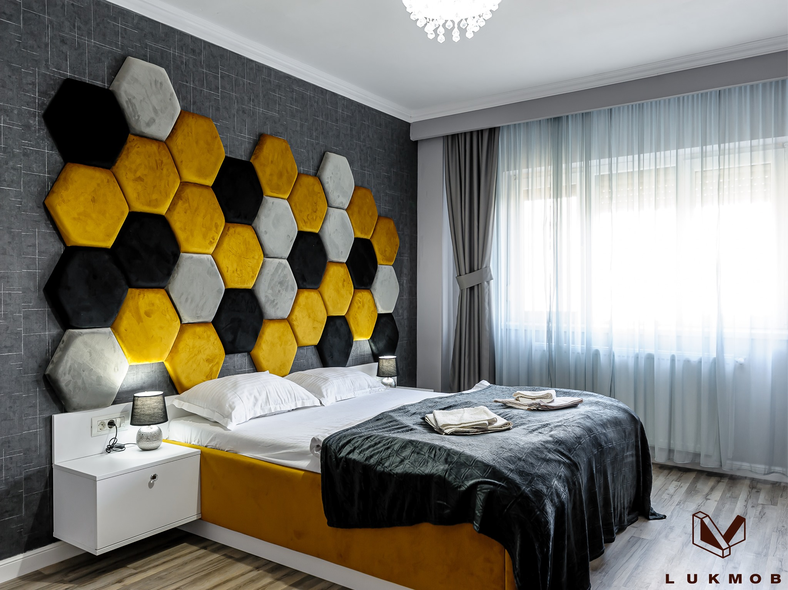
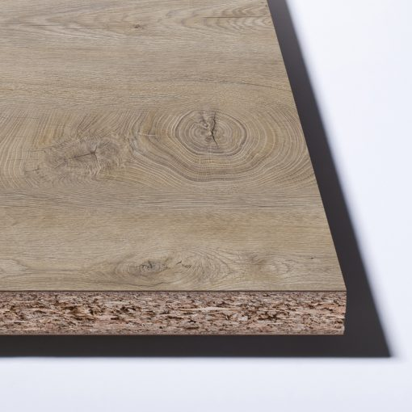
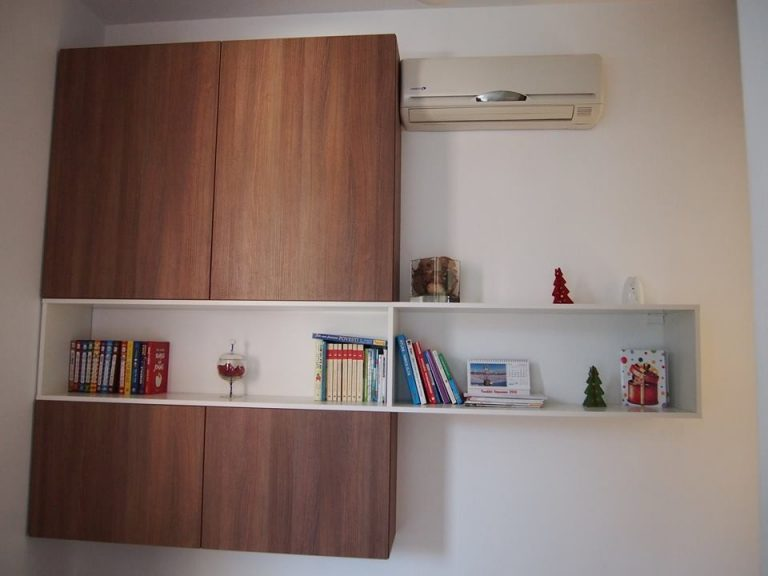
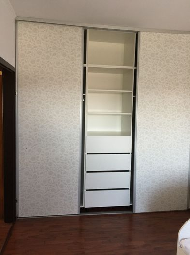
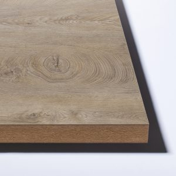

Program: Luni - Vineri: 9AM - 6PM Adresa:Parc Industrial FNC - Str. Agricultorilor, nr. 2/1 corp F, Arad Tel:
0724 552 792

LUKMOB
CONCEPT
0724 552 792
Executăm mobilă la comandă.
Transformă-ți locuința așa cum ai visat!
Putem personaliza și accesoriza foarte ușor în funcție de dorințe, locuința dvs.
Focus pe client
Lucram indeaproape cu fiecare client si ne asiguram ca vom livra exact ceea ce ai visat.
Tehnologii Moderne
Folosim cele mai noi tehnologii in materie de prelucrarea mobilei. Astfel, mobila ta va avea o durata de viata maxima.>
Solutii Complexe
Oferim solutii chiar si la cele mai complexe proiecte sau cele mai indraznete design-uri.
MATERIALE FOLOSITE
PAL-ul ( plăci aglomerate din lemn) este alcătuit din straturi de aşchii lemnoase legate cu răşină, presate prin aplicarea de înaltă presiune şi căldură. Peste această placă vin apoi aplicate diverse materiale decorative. PAL-ul se poate finisa cu o pelicula de melamina, furnir sau diverse lacuri.
Pentru realizarea mobilierului, se folosește pal-ul melaminat, care se obține în urma aplicării mai multor straturi de melamină și hârtie impregnată cu modelul sau culoarea finisajului dorit. Melamina oferă o gamă foarte largă de culori uni, dar si fibre care imita perfect esențele lemnoase, piatra sau marmura.

Placă pal
Avantajele pal-ului melaminat:
cost scăzut de producție comparativ cu mdf sau lemn masiv
material cu o greutate mai mică, prelucrare relativ ușoară, astfel timpul de execuție este mai scăzut
gamă extrem de variată de culori și texturi, fiind astfel extrem de versatil și ușor de asortat
se potrivește pentru mobilier de locuințe, spații comerciale, placări pereți
Dezavantajele pal-ului melaminat:
se folosește exclusiv pentru spațiile interioare( expunerea directă la lumină sau umiditate pentru timp îndelungat degradează materialul)
sensibilitate mai mare la umiditate, aburi și diferențe de temperatură
miros specific, puțin înțepător și ușor neplacut, care însă dispare în timp ( de aceea contează foarte mult calitatea acestuia, cât și producătorul)
durată de viață mai redusă decât a mdf-ului


MDF( Medium Density Fiberboard) reprezintă tot un fel de placă aglomerată din lemn, alcătuită din lemn compozit, tocat fin și amestecat cu clei sau rășini sintetice presate la cald. Mdf-ul are o densitate mult mai mare decât pal-ul, este un material mai dur și mai greu, înlocuind cu succes lemnul masiv, prin faptul ca e prelucrabil pe suprafață.
Deoarece marginile acestuia sunt rotunjite, dispare necesitatea căntuirii. Lipsa acestuia conferă materialului un aspect mult mai elegant și compact. Suprafața dură și netedă permite realizarea în relief a diferitelor modele pe fronturi. Această tehnică poartă denumirea de frezare. Cu ajutorul frezărilor se pot realiza modele care imită stilul clasic de mobilier realizat din lemn masiv, însă la costuri mult mai mici și dintr-un material care nu “lucrează” în timp.
Există patru tipuri de fronturi din mdf: mdf melaminat, mdf înfoliat, mdf lăcuit și vopsit, mdf furniruit cu furnir din lemn ( se poate băițui și lăcui).

Placă MDF
Avantajele MDF-ului:
rezistență mare la umiditate și durată de viață mai mare
duritate mai mare, comparabilă cu cea a lemnului masiv
finisaje excelente, cu ajutorul frezărilor se pot obține modele extrem de frumoase, comparabile cu stilul clasic din lemn masiv
se poate revopsi în cazul în care suprafața a fost deteriorată
indicat si pentru spațiile expuse la umiditate mai mare( băi, bucătării)
marginile fronturilor pot fi rotunjite, eliminând astfel necesitatea aplicării unui cant, obținându-se un aspect mai elegant și compact.
Dezavantajele MDF-ului:
costul e mai ridicat deoarece prelucrarea acestuia e mai costisitoare
forme standard, în unele cazuri
De cele mai multe ori, în design-ul mobilierului se folosește o combinație între aceste două materiale, structura mobilierului realizându-se din pal, iar ușile, sertarele, părțile unde există un grad mai mare de utilizare, se confecționează din mdf.
Indiferent de alegerea dumneavoastră , calitatea materialului, dar și a execuției ar trebui să primeze. De aceea, noi suntem extrem de riguroși în alegerea furnizorilor pentru materialele cu care lucrăm. Atât pentru Pal, dar și pentru Mdf, colaborăm cu cei mai buni furnizori de pe piața din România.
Sperăm că , având acum toate informațiile la îndemână, alegerea nu va fi una foarte dificilă. Indiferent că veți opta pentru pal sau mdf, cu ajutorul acestor două materiale, se poate crea un mobilier cu design modern, durabil, dar totodată confortabil, ergonomic și funcțional.
 Tehnologii Moderne
Tehnologii Moderne